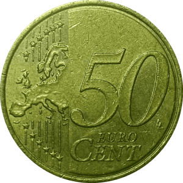

Monedas en circulación


La mayoría de las monedas que encontraremos en nuestras vidas serán monedas que han estado en circulación, es decir, las monedas con las que compramos y pagamos.
El hecho de haber estado moviéndose de mano en mano hace que la moneda sea menos valiosa, porque ha recibido golpes, arañazos, manchas e incluso su pátina1 ha podido verse dañada.
Esto no impide que puedan ser consideradas piezas de colección. Para algunos es una tarea entretenida revisar el cambio que tienen en la cartera para ver si encuentran alguna moneda que no tuvieran.
1La pátina es una capa protectora que se forma sobre las monedas. Está formada por los óxidos del metal que se forman cuando entra en contacto con el aire y, si es cuidada debidamente, puede darle un brillo único a la moneda. Aunque en la mayoría de monedas la pátina oscurece la pieza.